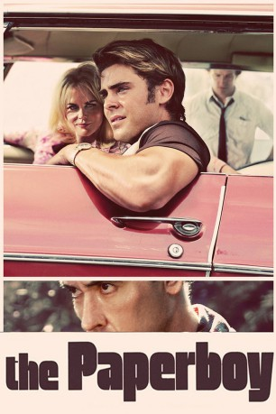
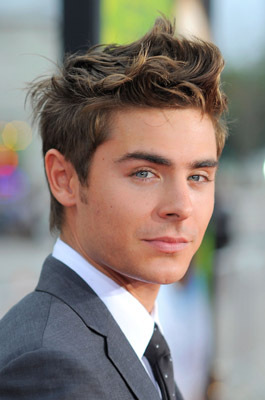
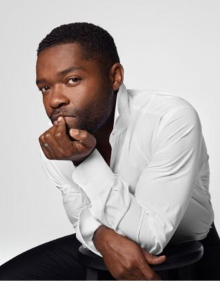
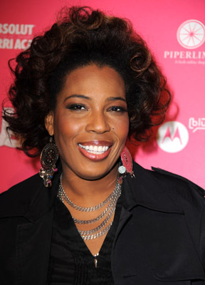
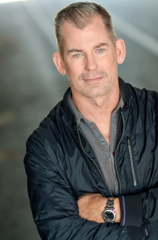
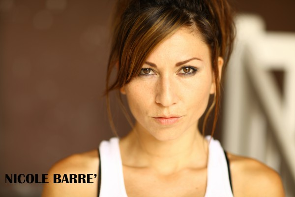
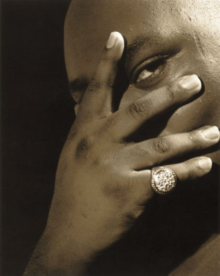
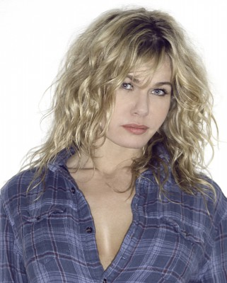
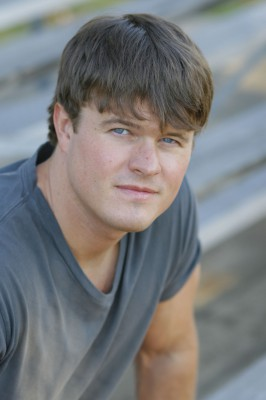

#9220 The Paperboy
 
 IMDB-Wertung: 5.8 / 10
IMDB-Wertung: 5.8 / 10  Metascore: 0
Metascore: 0 
Im tiefen amerikanischen Süden der 1960er Jahre wird der Sheriff von einem halbirren Hinterwäldler mit dem schönen Namen Hillary van Wetter erschossen. Charlotte, ein Groupie für Knackis und kaputte Typen, verliebt sich in den Todeskandidaten und fördert Entlastendes zutage. Sie gewinnt die Unterstützung des ortskundigen Journalisten Ward, der sich die publikumswirksame Enthüllung eines Justizskandals erhofft. Ihrem aufreizenden Auftreten kann man sich nur schwer entziehen, und auch Wards kleiner Bruder Jack verfällt ihr zusehends.
Jahr: 2012
Dauer: 106 Minuten
FSK: 16
Land: USA Studio: Millennium FilmsTonspuren: DTS - ,
Untertitel: Deutsch,
Auflösung: 1080p (1920x800) Größe: 11878 MB
Genre: Thriller, Drama, Krimi, Mystery
Regisseur: Lee Daniels
Drehbuch: Peter Dexter
Soundtrack: Mario Grigorov
Darsteller:
-  Zac Efron als Jack Jansen
 Matthew McConaughey als Ward Jansen
Matthew McConaughey als Ward Jansen Nicole Kidman als Charlotte Bless
Nicole Kidman als Charlotte Bless John Cusack als Hillary Van Wetter
John Cusack als Hillary Van Wetter-  David Oyelowo als Yardley Acheman
 Scott Glenn als W.W. Jansen
Scott Glenn als W.W. Jansen Ned Bellamy als Tyree Van Wetter
Ned Bellamy als Tyree Van Wetter- Nealla Gordon als Ellen Guthrie
-  Macy Gray als Anita Chester
- Kevin Waterman als Victim
-  Peter Murnik als Death Row Guard
 John P. Fertitta als Sam Ellison
John P. Fertitta als Sam Ellison Jay Oliver als Mr. Guthrie / Wedding Guest
Jay Oliver als Mr. Guthrie / Wedding Guest- Gary Clarke als Weldon Pine
- Ava Bogle als Renee / Nail Biter
- J.D. Evermore als Gate Guard
- René J.F. Piazza als Kitchen Supervisor
- Phyllis Montana LeBlanc als Bartender
-  Nicole Barré als Charlotte Girlfriend #2
- Camille Balsamo als Pam / Beach Girl #1
- Leslie Steele als Kim / Beach Girl #2
- Grace Hightower als Yardley's Girlfriend
- Lorrie Chilcoat als Wedding Singer
-  Faizon Love als Comedian
- Stephen C. Lewis als Hustler #3
-  Katarzyna Wolejnio als Jennifer
- Nikolette Noel als Nancy
- Barbara Bain als Cinnamon Carter in 'Mission: Impossible' (archive footage) (uncredited)
 Johnny Carson als Himself (archive footage) (uncredited)
Johnny Carson als Himself (archive footage) (uncredited)- David A Cole als Extra (uncredited)
- Lee Daniels als Bartender (uncredited)
- Amye Gousset als Receptionist (uncredited)
- Monica R. Harris als Background (uncredited)
- Shawn M. Richardz als Waitress (uncredited)
- Edrick Browne als Hustler #1
- Danny Hanemann als Sheriff Thurmond Call
- Adam Sibley als Eugene
- Paul Fisher als Wedding Photographer
- Lydia Rooks als Charlotte Girlfriend #1
- Stephanie Jordan als Singer #1
- Carmen Barika als Singer #2
- Nicole Porche als Singer #3
- Rahsaana Ison als Lady in Bar
- Corrina Lyons als Cousin Alice
- John Thompson als Interviewer
-  Grant Case als Surfer Dude (uncredited)
- Russell M. Haeuser als Newspaper Reporter (uncredited)
- Emily D. Haley als Hospital Visitor (uncredited)
- Jeanine Hill als Honeymoon Girl (uncredited)
- Kassidy Ison als Little School Girl (uncredited)
Datei: X:\2012(N-Z)\Paperboy, The (2012, FSK16, 1920x800).mkv seit 20.07.2018
Festplatte: HD 2012(N-Z)-2013(A-H)
 Es gibt insgesamt 138 Filme in der Gruppe '2012(N-Z)'
Es gibt insgesamt 138 Filme in der Gruppe '2012(N-Z)'